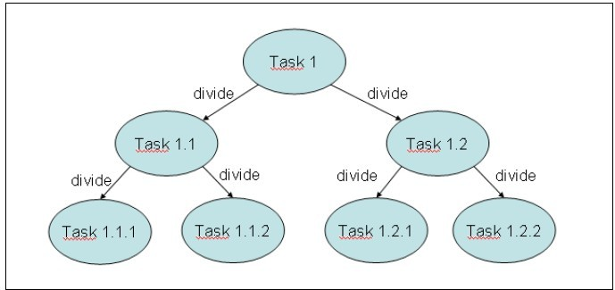
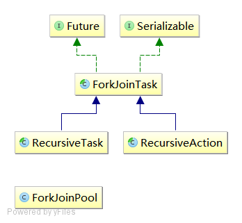

简介
Fork/Join框架是自Java7引入的，它通过分治技术(Divide and Conquer Technique)将问题分拆成小任务。
这个框架基于以下两个操作：
-
分解(Fork)：也就是分隔任务 -
合并(Join)：也就是合并结果

该框架的核心是由两个类组成：
-
ForkJoinPool：该类实现了ExecutorService接口 和 工作窃取算法(work-stealing algorithm) 。它的作用在于管理工作者线程，并提供任务的状态信息。 -
ForkJoinTask：它是在ForkJoinPool中执行的任务的基类。它有两个子类：-
RecursiveAction：用于任务没有返回结果的场景 -
RecursiveTask：用于任务有返回结果的场景
-

示例
同步执行任务：
public class RecursiveTaskTest {
public static void main(String[] args) {
ForkJoinPool pool = new ForkJoinPool();
RecursiveTask<Long> task = new SumTask3(0,1000000000);
pool.execute(task);
while(!task.isDone()){
System.out.println("待处理任务数："+pool.getQueuedTaskCount());
System.out.println("活跃线程数："+pool.getActiveThreadCount());
System.out.println("运行线程数："+pool.getRunningThreadCount());
System.out.println("任务窃取数："+pool.getStealCount());
}
try {
System.out.println("并行累加结果为："+task.get());
} catch (InterruptedException | ExecutionException e) {
e.printStackTrace();
} finally {
pool.shutdown();
}
long result1=0;
for (int i = 0; i <= 1000000000; i++) {
result1+=i;
}
System.out.println("单线程累加结果为："+result1);
}
}
class SumTask3 extends RecursiveTask<Long>{
private static final long serialVersionUID = 1L;
private int start;
private int end;
public SumTask3(int start, int end) {
super();
this.start = start;
this.end = end;
}
@Override
protected Long compute() {
long result = 0;
if(end-start<1000){
for (int i=start;i<=end;i++){
result+=i;
}
}else{
int mid = (start+end)/2;
RecursiveTask<Long> task1 = new SumTask3(start, mid);
RecursiveTask<Long> task2 = new SumTask3(mid+1, end);
invokeAll(task1,task2);
try {
result = task1.get()+task2.get();
} catch (InterruptedException | ExecutionException e) {
e.printStackTrace();
}
}
return result;
}
}
异步执行任务：
public class RecursiveTaskTest {
public static void main(String[] args) {
ForkJoinPool pool = new ForkJoinPool();
RecursiveTask<Long> task = new SumTask(0,1000000000);
pool.execute(task);
while(!task.isDone()){
System.out.println("待处理任务数："+pool.getQueuedTaskCount());
System.out.println("活跃线程数："+pool.getActiveThreadCount());
System.out.println("运行线程数："+pool.getRunningThreadCount());
System.out.println("任务窃取数："+pool.getStealCount());
}
try {
System.out.println("并行累加结果为："+task.get());
} catch (InterruptedException | ExecutionException e) {
e.printStackTrace();
} finally {
pool.shutdown();
}
long result1=0;
for (int i = 0; i <= 1000000000; i++) {
result1+=i;
}
System.out.println("单线程累加结果为："+result1);
}
}
class SumTask extends RecursiveTask<Long>{
private static final long serialVersionUID = 1L;
private int start;
private int end;
public SumTask(int start, int end) {
super();
this.start = start;
this.end = end;
}
@Override
public Long compute() {//方法重写时，把访问权限改成了public
long result = 0;
if(end-start<1000){
for (int i=start;i<=end;i++){
result+=i;
}
}else{
int mid = (start+end)/2;
SumTask task1 = new SumTask(start, mid);
SumTask task2 = new SumTask(mid+1, end);
task1.fork();
long right = task2.compute(); //注意compute 和 fork的调用顺序，错了就不能并行执行了
long left = task1.join();
result = right+left;
// 另一种方式
// SumTask2 task1 = new SumTask2(start, mid);
// SumTask2 task2 = new SumTask2(mid+1, end);
// task1.fork();
// task2.fork();
// long right = task2.join();
// long left = task1.join();
// result = right+left;
}
return result;
}
}
注意事项：
- 注意fork和compute的调用顺序
- 除非想要顺序执行，否则不要在RecursiveTask和RecursiveAction内执行invoke方法。
- 由于多方面的原因，并行计算的效率可能会低于你的预期
内部实现分析
待完成
日期：2014-06-20
参考资料：聊聊并发（八）——Fork/Join框架介绍、《Java 7并发编程实战手册》第五章Fork/Join框架、Beginner's Introduction to Java's ForkJoin Framework